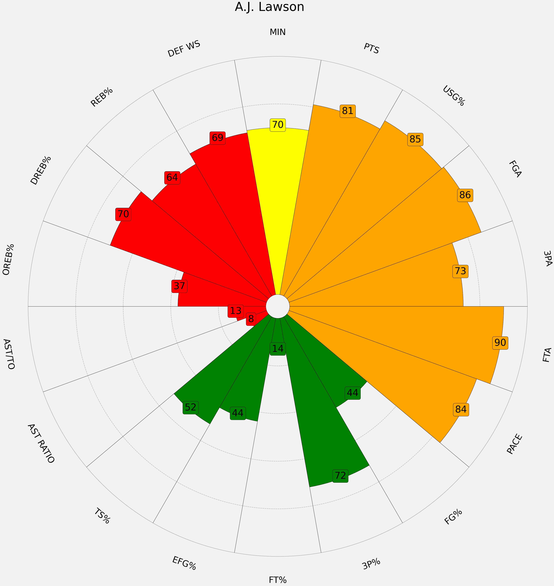

A.J. Lawson

Toronto Raptors
Position(s): SG
Age: 24
Height: 6'6"
Wingspan: 6'6"
Draft: 2021 (Undrafted)
Contract Type: Standard (Non-Guaranteed)
Salary: $2,270,735
Exp: 2026-27 (UFA)
Profile: A.J. Lawson is a Canadian guard with the Toronto Raptors of the National Basketball Association (NBA). He is currently on a two year non-guaranteed contract with the Raptors 905 and played three seasons with the South Carolina Gamecocks. He is a score first shooting guard who averaged 14.2 PPG on 34.9% 3P% in college.
Section 1
- …
- …
Section 2
- …
- …
Section 3
- …
- …
Section 4
- …
- …



×